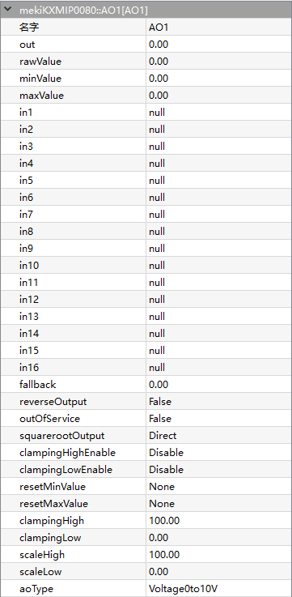
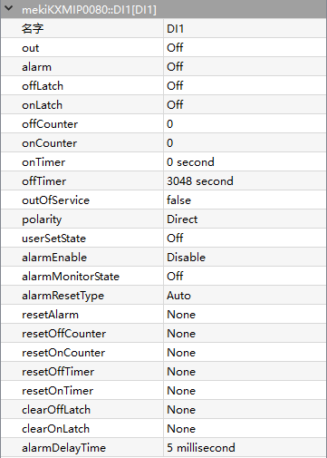
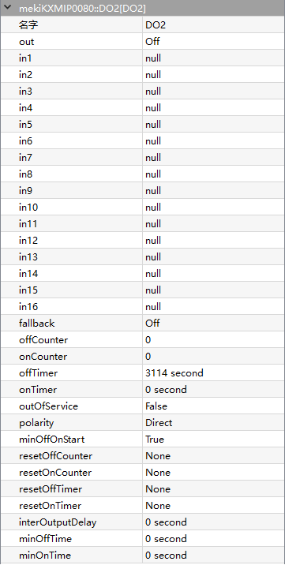
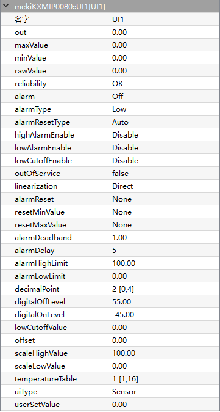

mekiIO
DDC28P/IO22U/28U/28P/KXM16P/22P/IP0080
- AO
- 
AO is the component provides an interface for the physical analogue output point that is able to source/drive a 0 to 20mA current or 0 to 10V voltage signal. The output type is selected via AO configuration and hardware jumper setting.
The analogue output provides 16 levels of prioritized command to control to the physical point. In1 has the highest priority whereas In16 has the lowest. The input may have a commanded value (valid floating value) or a null value (usually NaN in floating point). A null value indicates that there is no value (or not active) in that priority. The analogue output continuously monitors all prioritized inputs (In1 to In16) to locate the entry with the highest priority non-NULL value and outputs it.
- Parameters:
Out (real, percentage) – Output value
Rawvalue (real) – Raw output value depending on the AOType, equal to 0-10 when AOType is set to 0V-10V
Minvalue (real, percentage) – Min output value
Maxvalue (real, percentage) – Max output value
In1-In16 (real) – 16-level priority input, higher level input have higher priority to control Out value
Fallback (real) – Default Out value when all In1-In16 are Null
ReverseOutput (boolean) –
Enables to reverse the output.
False = normal output, True = reverse output
ReverseOutput (%) = 100 - Out (%)
OutofServices (boolean) –
Enables the output to make loss of every function.
False = normal output, True = out of service.
When OutofService is true, the Out is always 0
SquarerootOutput (option) –
Enables the output to take the square root operation, relationship between output value and physical value:
Physical Calculated Value (%) = Out (%) * Out (%)
Physical Value = Physical Calculated Value (%) * (Out High - Out Low) + Out Low
Out (%) = 100 * Out/ (ScaleHigh - ScaleLow)
*Out*(High) = 10V (voltage type), 20mA (current type)
*Out*(Low) = 0V (voltage type), 0mA (current type 0 - 20mA), 4mA (current type 4 - 20mA)
ClampingHighEnable (boolean) – Enables the clamping high limit control for the output value.
ClampingLowEnable (boolean) – Enables the clamping low limit control for the output value.
ResetMinvalue (boolean) – Enables to reset the MinValue back to 0.
ResetMaxvalue (boolean) – Enables to reset the MaxValue back to 0.
ClampingHigh (real) – Output high limit, set the Maxvalue value even if it exceeds the processed value
ClampingLow (real) – Output low limit, set the Minvalue value even if it falls the processed value
ScaleHigh (real) – Output scale high value
ScaleLow (real) –
Output value when physical output value equals to lowest value
Voltage (0 - 10V): 0V
Current (0 - 20mA): 0mA
Current (4 - 20mA): 4mA
- AO uses the scalelow and scalehigh to convert the output value to physical value. Raw value register shows the physical output.
Physical Value = (Out (%)) * (ScaleHigh - ScaleLow)
- For instance:
AOType = Current 4 - 20mA
ScaleLow Value = 0%
ScaleHigh Value = 100%
Out Value = 50%
AOType (option) –
Voltage, 0-10V
Current, 4mA-20mA
Current, 0mA-20mA
{kind=link}
- DI
- 
DI component is used for reading the digital value connected to one of the physical digital input points on the controller. It is typically used to monitor the status of contact closures from various field devices such as switches, open/close sensors or any other dry contact devices.
There are 16 digital input points on IO28U/DDC28P controller. Eight of them are derived directly from digital input detection circuitry (+5Vdc pulled up), named as DI1 to DI8. Whereby the other eights are derived from universal input (UI or AI) using value conversion (DI9 to D16). DI1 to DI8 might have different characteristics comparing to DI9 to DI16 depend on the AI settings. Please refer to AI component section regarding the conversion.
- Parameters:
Out (boolean) – Output state
Alarm (boolean) – Digital alarm state
OffLatch (boolean) – Off lock status
OnLatch (boolean) – On lock status
OffCounter (integer) – Accumulate number when off counter, from ranges of 0 - 65535
OnCounter (integer) – Accumulate number when on counter, from ranges of 0 - 65535
OnTimer (integer) – Accumulate counting value when on timer, from ranges of 0 - 65535
OffTimer (integer) – Accumulate counting value when off timer, from ranges of 0 - 65535
OutofServices (boolean) –
Enables the output to make loss of every function.
False = normal output, True = out of service.
When OutofService is true, the Out is always 0
Polarity (option) –
Inverts the output polarity
Direct = normal output
Reverse = negation
UserSetState (boolean) – Does not work until OutofService is true, Out equal to User Set State when OutofService is true
AlarmEnable (boolean) –
Digital input set to alarm state, based of alarm type
Enable when alarm is triggered
Disable when alarm failure
AlarmMonitorState (boolean) –
DI alarm state
off = Alarm is triggered when DI is off
on = Alarm is triggered when DI is on
AlarmResetType (option) –
Mode of alarm recovery
Auto = When DI is not in the alarm monitor state, alarm will be restored back to normal
Manual = When DI produces alarm, it only can be manually recovered
ResetAlarm (option) – Alarm recovered manually when AlarmResetType is set to Manual
ResetOffCounter (boolean) – Enables to reset the OffCounter to 0
ResetOnCounter (boolean) – Enables to reset the OnCounter to 0
ResetOffTimer (boolean) – Enables to reset the OffTimer to 0
ResetOnTimer (boolean) – Enables to reset the OnTimer to 0
ClearOffLatch (boolean) – Clear OffLatch
ClearOnLatch (boolean) – Clear OnLatch
AlarmDelayTime (integer, millisecond) – Alarm delay time when alarm triggered
{kind=link}
- DO
- 
DO is used for switching a physical digital output point OFF or ON. The typical usage is starting/stopping the external equipment such as light, valve, fan or any other digital control equipment. The DO component monitors the required set state and determines the proper hardware output action based on its settings. There are eight digital output points on IO28U/IO22U/DDC28P controller. Each of them is driven by a dry contact relay (SPST Relay) which is able to drive the external devices up to 1 Ampere (AC/DC).
Digital output is a prioritized command with 16 priorities control plus a default value (relinquish default). In1 has the highest priority while in16 has the lowest. In6 is reserved for minimum/maximum time controlling. The value can be commanded value (false = 0, true = 1) or a null value (= 2). A null value indicates that there is no value (or not active) in that priority.
- Parameters:
Out (boolean) – Output state
In1-In16 (real) – 16-level priority input, higher level input have higher priority to control Out value
Fallback (boolean) – Default Out value when all In1-In16 are Null
OffCounter (integer) – Accumulate number when off counter, from ranges of 0 - 65535
OnCounter (integer) – Accumulate number when on counter, from ranges of 0 - 65535
OnTimer (integer) – Accumulate counting value when on timer, from ranges of 0 - 65535
OffTimer (integer) – Accumulate counting value when off timer, from ranges of 0 - 65535
OutofServices (boolean) –
Enables the output to make loss of every function.
False = normal output, True = out of service.
When OutofService is true, Out is always 0
Polarity (option) –
Inverts the output polarity,
Direct = normal output
Reverse = negation
MinOffOnStart (boolean) – Time delay of output conversion, based on MinOffTime and MinOnTime
ResetOnCounter (boolean) – Enables to reset the OnCounter to 0
ResetOffCounter (boolean) – Enables to reset the OffCounter to 0
ResetOffTimer (boolean) – Enables to reset the OffTimer to 0
ResetOnTimer (boolean) – Enables to reset the OnTimer to 0
ResetOffTimer – Enables to reset the OffTimer to 0
InterOutputDelay (integer, second) – Output delay time
MinOffTime (integer, second) – Minimum time delay when output transitioned from on to off
MinOnTime (integer, second) – Minimum time delay when output transitioned from off to on
{kind=link}
- UI
- 
UI is used for reading the analogue value connected to one of the physical universal input points on a controller. There are eight universal input points on IO22U/IO28U/DDC28P controller that support voltage, current, resistance and temperature sensors. The input type is selected via AI configuration and hardware jumper setting. For temperature sensors, the standard curves for 10K Thermistor (with or without 11K shunt), 1K Balco and 1K Platinum (in degree C and Fahrenheit F) are provided within the internal tables. Additional tables are also available as user defined curves.
- Parameters:
Out (real) – UI Output physical value
MaxValue (real) – Maximum record UI received
MinValue (real) – Minimum record UI received
Rawvalue (real) – Raw output value depending on the UIType, equal to 0-10 when UIType is set to 0V-10V
Reliability (boolean) – Display object state
Alarm (boolean) – Alarm state of selected channel based on limit of configurations
AlarmType (state) – Alarm type
AlarmResetType (option) – Auto or manually recovery alarm
HighAlarmEnable (boolean) – Enable AlarmHighLimit
LowAlarmEnable (boolean) – Enable AlarmLowLimit
LowCutOffEnable (boolean) –
Enable low level cuttoff
Low cutoff function helps to filter unstable value by forcing the output value to scale low value when iput valvue is lower than low cutoff value.
The cutoff enable can only be applied to current and voltage input type selection
OutofServices (boolean) –
Enables the output to make loss of every function.
False = normal output, True = out of service.
Linearization (option) –
Squareroot operation on input value, only applicable for input type voltage and current
Direct = linearization
AlarmReset (boolean) – Reset alarm state, only applies to manual alarm reset
ResetMinvalue (boolean) – Enables to reset the MinValue back to 0
ResetMaxvalue (boolean) – Enables to reset the MaxValue back to 0
AlarmDeadband (boolean) –
Output alarm deadband value, deadband applied to AlarmLowLimit and AlarmHighLimit value to determine the return from alarm trip points.
Out must lower than the AlarmHighLimit by alarm deadband limit to return from high alarm trip point
Out must greater than the AlarmLowLimit by alarm deadband limit to return from low alarm trip point
AlarmDelay (integer, second) –
UI alarm delay time, maximum 65535 seconds
- The delay duration that Out must be:
in the alarm condition before alarm state is generated
in the non-alarm condition before returning from alarm state
AlarmHighLimit (real) – High limit value
AlarmLowLimit (real) – Low limit value
DecimalPoint (integer) – decimal point precision of Out for roundup during conversion
DigitalOffLevel (real) – Off state level of Out value for digital transformation, positive level value means greater than, and a negative levle means lower than comparison
DigitalOnLevel (real) – On state level of Out value for digital transformation, positive level value means greater than, and a negative levle means lower than comparison
LowCutOffValue (real) – Out value be set to ScaleLowValue whenever the input value is lower than the LowCutOffValue if LowCutOffEnable is enabled, only applicable to current and voltage input type
Offset (real) – Offset adjustment for input
ScaleHighValue (real) – Applicable for volatge and current input only
ScaleLowValue (real) – Applicable for volatge and current input only
TemperatureTable (option) –
UI temperature selection from table 1 to 16
This temperature table defines the temperature curve table index used for looking up conversion for temperature sensor Input type
The controller has built-in 8 default temperature tables (9 to 16) and 8 user defined temperature tables (1 to 8) which are customizable in Virtual Device software (Setting->Temperature Table)
UIType (option) –
Sensor type connected to physical point and determines conversion algorithm
Voltage, 0-10V
Voltage, 0-5V
Current, 4mA-20mA
Current, 0mA-20mA
Resistance
Sensor
UserSetValue (real) – Out equal to UserSetValue when OutofService is true
{kind=link}